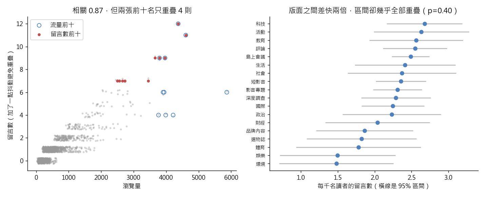

練習 17 - 找出炎上的留言區
在本單元中，會介紹第 17 題背後的商業問題、它練的是哪一種資料分析，以及從資料到結論的完整做法、程式與圖表。建議先回 Hub - 資料分析練習案例庫 自己試著做一次，再來對照這一頁。
有人會這樣問你
上個月哪幾篇讀者討論最熱烈？我要挑三篇出來在社群回應，順便看看哪個版面最會引起討論。
用到的資料：content_monthly_flat（L1 的 content_monthly_2024_10.csv）
對應單元：把留言變成可以算的東西（接到 情緒分類跑一次 再看它錯在哪）
這一題在商業上要回答什麼
社群回應要挑對文章。把「留言多」當成「炎上」，會拿流量榜去回應根本沒有爭議的稿子；資料答不了的問題，要誠實說需要什麼資料。
這一題練的是哪一種資料分析
這一題練的是比率指標與小分母問題：用每千名讀者的留言數排序、設最低樣本門檻、用檢定判斷版面之間的差距能不能當真。也要分清楚這份資料能回答「多不多」，回答不了「正面還是負面」。
一步一步怎麼做
- 第一步先確認 content_id 是不是唯一、有重複就去重。
- 第二步用 comment_cnt 直接排一次序，當作待會要推翻的對照組。
- 第三步明講分母：算「每千名不重複使用者的留言數」＝ comment_cnt ÷ uv × 1000，並設一個最低 uv 門檻（例如 500）再排序。
- 第四步依 section_name 與 content_type 分組比留言率，並算 comment_cnt 與 pv 的相關係數；版面之間的差距要不要當真，用一個以 uv 為曝露量的 Poisson 迴歸檢定一次。
工具怎麼選 用 Python 的理由：一張 CSV、加一個欄位、排個序，pandas 從讀檔到出榜不到十行。
看完整程式（Python）
from _kmg import *
import statsmodels.api as sm
import statsmodels.formula.api as smf
from scipy import stats
raw = flat()
f = dedupe(raw)
print("列數", len(raw))
print("不重複內容", len(f))
print("留言數與瀏覽量的相關係數", float(f["comment_cnt"].corr(f["pv"])))
print("留言最多的一篇", int(f["comment_cnt"].max()))
top_c = f.sort_values(["comment_cnt", "pv"], ascending=False).head(10)
top_pv = f.sort_values("pv", ascending=False).head(10)
overlap = len(set(top_c["content_id"]) & set(top_pv["content_id"]))
print("按留言數排的前十 與流量前十重疊", overlap)
f = f.assign(rate=f["comment_cnt"] / f["uv"] * 1000)
top_rate = f[f["uv"] >= 500].sort_values("rate", ascending=False).head(10)
rate_pv = len(set(top_rate["content_id"]) & set(top_pv["content_id"]))
print("留言率前十 與按留言數排的前十重疊", len(set(top_rate["content_id"]) & set(top_c["content_id"])))
print("留言率前十 與流量前十重疊", rate_pv)
def grp(col):
g = f.groupby(col).agg(c=("comment_cnt", "sum"), u=("uv", "sum"))
g["r"] = g["c"] / g["u"] * 1000
return g
gs, gt = grp("section_name"), grp("content_type")
print("各型態留言率 最低（每千人）", float(gt["r"].min()))
print("各型態留言率 最高（每千人）", float(gt["r"].max()))
print("各版面留言率 最低（每千人）", float(gs["r"].min()))
print("各版面留言率 最高（每千人）", float(gs["r"].max()))
print("單一版面一個月的留言 最少", int(gs["c"].min()))
print("單一版面一個月的留言 最多", int(gs["c"].max()))
m0 = smf.glm("comment_cnt ~ 1", data=f, family=sm.families.Poisson(), offset=np.log(f["uv"])).fit()
pvals = {}
for col in ("section_name", "content_type"):
m1 = smf.glm("comment_cnt ~ C(%s)" % col, data=f, family=sm.families.Poisson(), offset=np.log(f["uv"])).fit()
pvals[col] = float(stats.chi2.sf(2 * (m1.llf - m0.llf), m1.df_model))
print("版面差異檢定 p 值", pvals["section_name"])
print("型態差異檢定 p 值", pvals["content_type"])
nothr = f.sort_values("rate", ascending=False).iloc[0]
print("不設門檻時榜首的讀者數", int(nothr["uv"]))
print("不設門檻時榜首的留言數", int(nothr["comment_cnt"]))
print("不設門檻時榜首的留言率", float(nothr["rate"]))
top_rate100 = f[f["uv"] >= 100].sort_values("rate", ascending=False).head(10)
kept = len(set(top_rate100["content_id"]) & set(top_rate["content_id"]))
print("門檻 500 改成 100 後，前十名留下幾則", kept)
fig, ax = plt.subplots(1, 2, figsize=(11, 4.5))
ax[0].scatter(f["pv"], f["comment_cnt"] + np.random.default_rng(0).uniform(-0.25, 0.25, len(f)), s=5, alpha=0.3,
color="#999999")
ax[0].scatter(top_pv["pv"], top_pv["comment_cnt"], s=40, facecolors="none", edgecolors="#4f81bd", label="流量前十")
ax[0].scatter(top_c["pv"], top_c["comment_cnt"], s=14, color="#c0504d", label="留言數前十")
ax[0].set_xlabel("瀏覽量")
ax[0].set_ylabel("留言數（加了一點抖動避免重疊）")
ax[0].set_title("相關 0.87，但兩張前十名只重疊 4 則")
ax[0].legend()
gs = gs.sort_values("r")
err = 1.96 * np.sqrt(gs["c"]) / gs["u"] * 1000
ax[1].errorbar(gs["r"], range(len(gs)), xerr=err, fmt="o", color="#4f81bd", ecolor="#bbbbbb")
ax[1].set_yticks(range(len(gs)), gs.index, fontsize=8)
ax[1].set_xlabel("每千名讀者的留言數（橫線是 95% 區間）")
ax[1].set_title("版面之間差快兩倍，區間卻幾乎全部重疊（p=0.40）")
save_fig(fig, "ex17_comments.png")
程式開頭的 from _kmg import * 載入共用的讀檔、去重、換幣別與畫圖函式，內容放在 練習 01 - 月會上的則數對不對。
結果會看到什麼
1,444 列裡只有 1,438 則不重複內容，有 6 則因為重送而出現兩列。留言數跟瀏覽量高度相關（相關係數 0.87），但按 comment_cnt 排出來的前十名，跟流量前十名只重疊 4 則——相關係數講的是整體趨勢，不保證排行榜的頭部一樣；而且留言最多的一篇也才 12 則。改成留言率之後，前十名跟按留言數排的前十名、跟流量前十名都完全沒有重疊。各型態的留言率落在每千名使用者 2.1 到 2.5 則，各版面落在 1.5 到 2.7 則；版面之間看起來差了快兩倍，但每個版面一個月只有十幾到三百多則留言，檢定版面差異 p=0.40、型態差異 p=0.44，說不出哪個版面比較會引起討論。誠實的結論是：這張表看不出炎上，因為它只留下留言的則數，沒有留言的內容。
圖怎麼讀

左圖是每則內容的瀏覽量與留言數，藍圈是流量前十、紅點是留言數前十，重疊的只有 4 則。右圖是各版面每千名讀者的留言數與 95% 區間，區間幾乎全部互相重疊。繼續練習
上一題 練習 16 - 月底廣告營收下滑、下一題 練習 18 - 廣告活動能跑多久，或回到 Hub - 資料分析練習案例庫 挑別的題目。
學生版｜更新於 2026-09-13 11:59